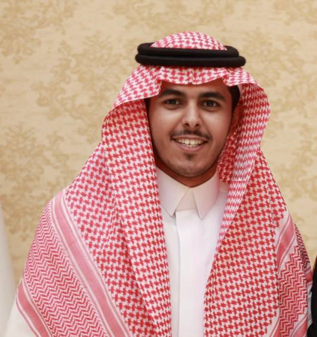

طالب هندسة ميكانيكية بجامعة القصيم، أعمل على دمج المبادئ الهندسية بالحلول الرقمية الحديثة. قمت بتطوير مبادرة "بوصلة الهندسة" لدعم الطلاب تقنياً، كما أتممت أكثر من 32 دورة تخصصية بشهادات معتمدة من منصات وجامعات عالمية كبرى مثل (Michigan, Rice, Georgia Tech) وشركات تقنية رائدة مثل Google وIBM، في مجالات البرمجة، الإدارة، وتطبيقات الذكاء الاصطناعي.
جامعة القصيم | 2024 - حتى الآن
دراسة أكاديمية متعمقة في الأنظمة الحرارية، ميكانيكا المواد، والتصميم الميكانيكي المتقدم.
مجال تخصصي وبحثي
دمج تقنيات الذكاء الاصطناعي في حل المسائل الهندسية المعقدة وتطوير نماذج محاكاة رقمية لتعزيز الدقة في التصميم.
تطوير برمجيات (Tech)
تصميم وتطوير البنية التحتية للمنصة الرقمية لتكون حلقة الوصل الفعّالة بين الطالب والدكتور.